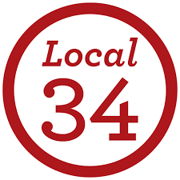

Against the Grain Community

Local 34–UNITE HERE represents over 4,000 clerical and technical workers at Yale University, fighting for dignity, respect, and fair working conditions both on the job and in the broader New Haven community. The union works to negotiate strong labor contracts and organizes campaigns focused on improving wages, benefits, and working conditions for its members. Local 34 stands as a cornerstone of the labor movement in New Haven and a vital advocate for working people everywhere.
Visit Website